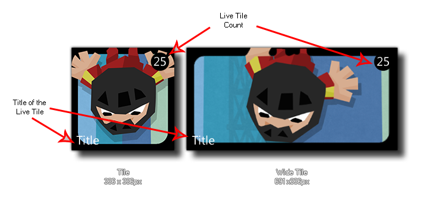

winphone_tile_count(num);
| Argument | Description |
|---|---|
| num | The value to display on the tile (real). |
Returns: N/A
With this function you can display a number on the Live Tile
(this number can be any value, but it will only display values from
0 - 99, with anything larger being shown as "+99"), as illustrated
by the image shown below:

winphone_tile_count(lives);
The above code will display the value of the global variable "lives" on the Live Tile for the game.